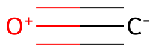
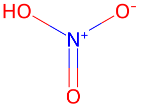
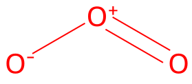

平成28年度 問3 有機化学及び燃料
次の3つの化合物A～Cのルイス構造を記したとき。カッコ内に示した元素の形式電荷の組合せとして、最も適切なものはどれか。ただし、ルイス構造では8電子則は常に満たされているとする。
- 一酸化炭素 CO（酸素O）
- 硝酸 HNO3（窒素N）
- オゾン O3（中心の酸素○）
| 選択肢 | A | B | C | |
|---|---|---|---|---|
|
①
|
+1 | +1 | +1 | |
|
②
|
+1 | +1 | -1 | |
|
③
|
+1 | -1 | +1 | |
|
④
|
-1 | +1 | +1 | |
|
⑤
|
-1 | -1 | +1 | |
正答
① A：+1、B：+1、C：+1
一酸化炭素はC–とO+が三重結合で結合しています。つまり酸素Oの形式電荷は+1です。

硝酸はN+に-OH、-O–、=Oが結合しています。つまり窒素Nの型式電荷は+1です。

オゾンはO=O+-O–という結合をしています。つまり中心の酸素Oの形式電荷は+1です。
